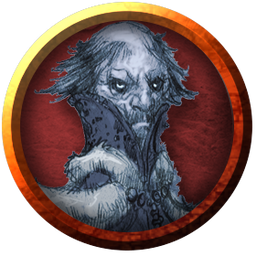
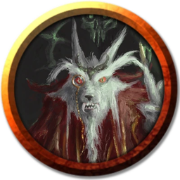

Während das fahle Licht des Morgengrauens durch die nebelgetränkten Baumwipfel scheint und sich grau-kalte Regentropfen durch die blassgrünen Blätter kämpfen, steht ihr zusammen mit Rebecca um einen Tisch, welcher Karten, Notizen, Diagramme und sonstige Papiere taktischer Relevanz beherbergt und die Vorgehensweise für die kommenden, finalen Stunden in Barovia erklärt.
„Hier ist der Plan. äußert Rebecca entschieden – dennoch könnt ihr erkennen, wie in ihren Worten auch ein Funken Besorgnis mitschwingt… „Helwa und ihre Truppe marschiert zusammen mit Wasilka zum Haupteingang des Schlosses um dort einige der Ungeheuer Strahds zu bekämpfen und davon abzuhalten, euch ausfindig zu machen. Um die Aufmerksamkeit von Strahd weiter zu zerteilen und seine Monster auf zwei Fronten zu verteilen wird Riktavio sich im Wald hinter dem Schloss herumtreiben. Sein Plan ist es, dass er sich als dich verkleidet,, Rebecca zeigt auf Val, „um Strahd zu verwirren. Damit sollten die bodengebundenen Bestien Strahds beschäftigt sein und euch in Ruhe lassen.
„Um die kleinen, fliegenden Kreaturen wird sich Dawian kümmern. Er wird ein Unwetter über dem Schloss beschwören, welches die Sicht behindert und das Fliegen unmöglich macht. Somit sind Strahds fliegende Ungeheuer im Schloss gefangen. Rebecca schaut wehmütig herüber zu Godfrey, welcher stoisch am Flussufer steht, und spricht weiter: „Um den wiedererweckten Argynvost wird sich Sir Godfrey mit seinen Wiedergängern kümmern. Auch wenn das Unwetter die kleinen Kreaturen aufhalten kann, lässt sich ein riesiger Drache wohl nicht davon beeindrucken lassen. Ich habe die Hoffnung, dass Argynvost kein zweites Mal sterben muss und wieder zur Besinnung kommen kann, doch Godfrey ist überzeugt davon, dass die dunkle Magie Strahds unumkehrbar ist und ein schnelles, ehrenwertes Ende durch seinen alten Paladinorden der einzige Weg ist…
Klonk. Klink. Klonk. Metallische Laute unterbrechen euer Gespräch. Ihr dreht euch um und seht Peter Müller, Schmied, mit euren Waffen auf euch zukommen. „Hier! Ich habe mich beeilt, damit ihr nicht auf mich warten müsst, um dem Teufel Strahd in den Arsch zu treten. Wie gewünscht habe ich eure Ausrüstung verbessert – die spezielle Peter-Müller-Behandlung. Eure Waffen sind jetzt besser als neu! Ich gehe jetzt noch ein paar Schwerter und Äxte für die anderen schmieden! Der stolze Schmied reicht euch eure Ausrüstung und geht wieder zurück zu seinem provisorischen Schmiedewerkstatt. Rebecca scheint begeistert aber nicht überrascht von dem schnellen Handeln des Schmieds „Immer wieder faszinierend wie schnell und effizient Peter arbeiten kann. Er ist wahrlich ein Wunderschmied. Aber wo waren wir? Ach genau.
„Da Strahds Kreaturen der Nacht nicht nur im Schloss hausen, sondern auch in den Wäldern ums Schloss herumstreunen, erzählt Rebecca, während sie mit einem Zeigestock auf einer Karte die verschiedenen Wälder in der Nähe des Schlosses umkreist, „müssen wir auch den Truppennachschub von außerhalb unterbrechen. Zum Glück habt ihr die Unterstützung Myris und Nidons gewinnen können. Unsere beiden lodernden Freunde sind schon Feuer und Flamme für den Plan großflächig Feuer um das Schloss zu legen, und damit den Truppennachschub von außerhalb zu unterbinden. Rebecca schmunzelt leicht über ihr Wortspiel und fährt in einem besorgten Ton fort:
„Natürlich wird das Schloss nicht leer sein – Strahd weiß, dass ihr das Schloss betreten werdet, wenn auch nicht wann und wo. Ich bin mir sicher, dass sich im Schloss noch einige Vampirbruten und ähnliches rumtreiben. Muriel hat ja auch davon berichtet, dass es neben den üblichen Kreaturen in Strahds Reihen auch ein großes Pflanzenmonster und einen Menschen, der im Umgang mit Blutmagie geübt ist, gibt. Und Rahadin wird sich wohl auch in den verwinkelten Gängen von Ravenloft rumtreiben. Seid also auf der Hut!
„Und damit wären die Truppen des Teufels abgehandelt. Wie ihr euch um Strahd kümmern sollt, wird euch Anijari, Rebecca schüttelt kurz den Kopf, „ich meine natürlich Inajira, erklären. Ich kann immer noch nicht fassen, dass du nicht der bist, für den du dich jahrelang ausgegeben hast., moniert Rebecca in einem gespielt vorwurfsvollen Ton, während sie sich zu dem schakalartigen Wesen umdreht.
„Du weißt doch, die meisten Sterblichen hier in Barovia sind nicht so begeistert von anders aussehenden Wesen. Wäre doch nur zu schade, wenn sie mich für eine weitere Kreatur der Nacht halten würden., erklärt Inajira besserwisserisch und dreht sich danach zu euch. „Um zu Strahd zurückzukommen: Der Plan ist eigentlich ganz einfach, ihr besiegt Strahds menschliche Form, folgt seiner Nebelform und sucht seinen Sarg auf, streift ihm den Ring über den Finger – den habt ihr ja noch, oder? – und rammt ihm einen Pflock durchs Herz. Inajira hält kurz inne. „Okay, vielleicht sollte ich euch ein paar mehr Details mitgeben. Bevor ihr euch ins Schloss begebt, kann ich eure Aura vor Strahd verstecken, damit dieser euch nicht mit seiner widernatürlichen Erkenntnismagie orten kann. Hierzu habe ich einen ziemlich obskuren Zauber im Repertoire, den ich vor langer Zeit von Nystul, einem unscheinbaren Erzmagier aus Tenh, gelernt habe. Nystul war, wie auch Mordenkainen, Mitglied des 'Zirkels der Acht'.
„Da wir gerade von Mordenkainen sprechen, Inajira blickt rüber zu Mordenkainens Simulakrum, welches hochkonzentriert eine Karte Barovias studiert, „Sein Simulakrum ist auch bereit uns zu helfen. In seinen Jahren hier in Barovia hat das Simulakrum – ich nenne es ab jetzt einfach Mordenkainen 2 – die Ersatz-Särge Strahds ausfindig gemacht. Dieser hat natürlich nicht nur einen einzelnen Sarg in seinem Schloss, das wäre viel zu unachtsam. Wie jeder gute, paranoide Herrscher, hat Strahd genügend Vorbereitungen für den Notfall getroffen und ein Dutzend Särge über Barovia verteilt – in der Hoffnung, dass er sich nach seiner Niederlage nicht in Reichweite seiner Peiniger regenerieren muss. Da Mordenkainen 2 die Verstecke der Särge außerhalb Ravenlofts kennt, wird er, während ihr im Schloss herumschleicht, diese aufsuchen und nach und nach zerstören. Damit ist Strahd gezwungen, seine Regeneration im Schloss – und somit in eurer Reichweite – zu beginnen. Ach, und kommt bloß nicht auf die Idee, alle Särge im Schloss zu zerstören., Inajira schaut euch ermahnend an, „Wenn Strahds Nebelform keinen Sarg zum Ruhen findet, wird er nach einiger Zeit sterben. Was natürlich bedeutet, dass alles umsonst war, denn so kann seine Seele nicht gefangen werden und er wird irgendwann neu geboren und der ganze Mist beginnt von vorne. Da hat nun wirklich niemand Lust drauf!
Nachdem Inajira euch eindringlich daran erinnert, Strahd nur dann zu töten, wenn er den Ring trägt, tritt Riktavio an die Gruppe heran und warnt die Abenteurer: „Strahd befindet sich mit Sicherheit auf dem Balkon an der Ostseite des Schlosses. Von dort hat er eine gute Übersicht über den waldbedeckten Teil des Schlachtfeldes. Aber ihr solltet nicht vorschnell agieren. Auch wenn ihr das Überraschungsmoment auf eurer Seite habt, ist Strahd kein einfacher Gegner. Alle Vorbereitung der Welt nützt nichts, wenn ihr euch zu einem verfrühten Duell provozieren lasst. Es wäre sinnvoll, wenn ihr euch erst in den Schatzkammern von Ravenloft umseht. Strahd hat mit Sicherheit einige mächtige magische Gegenstände, welche euch helfen können. Ich habe in Erzählungen gehört, dass sich das Sonnenschwert, eine mächtige Klinge, in Strahds Schloss befindet. Egal wie euer Plan zur Infiltration genau aussieht, dieses Schwert solltet ihr zuallererst ausfindig machen…
„Infiltration ist ein gutes Stichwort. wirft Inajira ein. „Wie wollt ihr denn überhaupt das Schloss betreten? Wenn ihr euch geschickt anstellt, könnt ihr beispielsweise den Trubel am Haupttor nutzen, um euch dort einzuschmuggeln. Alternativ gibt es aber noch einen Eingang an der Ostseite der Klippe. Dieser wird hauptsächlich genutzt, um Abfall aus dem Schloss zu transportieren. Aber wenn ich mich nicht täusche sollten diese Gänge direkt in die Keller von Ravenloft führen. Oder ihr klettert an der Ostseite die Klippe hinauf. Dort gibt es ein Fenster, welches direkt zu den Katakomben führt. Wahrscheinlich sind dort wichtige Leute beerdigt. Ich denke nicht, dass Strahd für irgendwelche minderen Leute eine große Gruft mit Fenster errichten hat lassen. Aber bei den Wetterverhältnissen dürfte das Klettern schwierig werden… Eine weitere Möglichkeit wäre noch der Teleportzirkel – Neferon hat ihn zwar aus dem Buch gewischt, aber ich weiß noch, wie er aussah und könnte ihn euch zeigen. Teleportieren könnt ihr ja, oder?